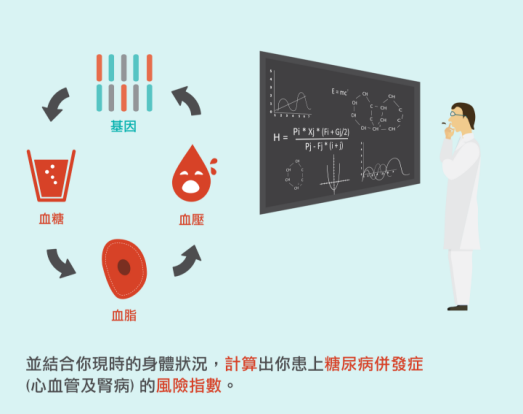

糖尿病是香港首十類常見致命疾病之一。其實糖尿病初期的病徵并不明顯，病者經常會因而此疏忽，確診後并沒有方法完全根治，還要長期控制飲食。如果能及早在糖尿病前期時控制飲食，定能減輕病情。
傳統的方法單靠血糖作檢測的媒介并不是有效預測糖尿病的途徑，因為血糖只會在身體已經出現問題時才會發出警號。
有見及此，基琳健康透過檢查人體的基因、結合血糖、血壓以及血脂等作綜合考量和分析個人患上糖尿病的風險。
糖尿病基因檢測分為基糖測與保糖測，參加者可以根據自己的身體情況作出選擇。
基糖測和保糖測的檢測過程是一樣的，同樣非常簡易與方便，只要抽取少量口腔細胞或血液即可。檢測報告能直接發到你的手機上，你可以通過手機應用程式My Gem隨時隨地查看自己的糖尿病基因檢測。